Implementation output / retained evidence
Light, renderedand measured. Native scenes, exact settings, and the performance–accuracy tradeoff of a rasterized photon-sheet viewfinder.
20 captured scenes
66 native films
6 matched studies
3 recorded binaries
01 / Preview
The cost of a faster view Reference gathering and a biased rasterized preview share the same scene, light convention and angular geometry in each pair. The preview reduces camera work, interpolates shading and filters narrow folds. A ratio above 1 means the preview costs less per measured pass.
Matched native study · 84
Utah teapot fast-preview-final-teapot
Finite sheet preview 480 × 300 output 240 × 150 preview raster 96 rays × 8 sheets 12 glass interfaces Refracted fog only Blur σ = 1.0 px
First renderer pass 24.88 → 20.40 ms1.22× reference / preview cost
Steady render pass 22.81 → 15.71 ms1.45× reference / preview cost
First film One native pass on each path. Geometry setup is included in the measured cost.
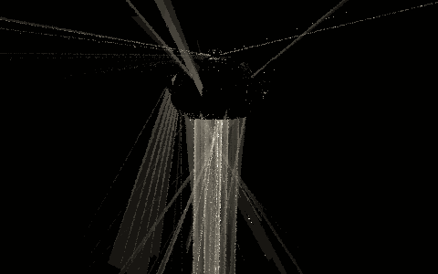
Reference · first film
480 × 300 · 1 passes
24.88 ms / measured pass
Mean RGB 0.001176 · peak component 0.521
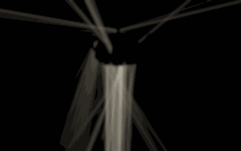
Preview · first film
480 × 300 · 1 passes
20.40 ms / measured pass
Mean RGB 0.001332 · peak component 0.05978
Approximately equal render time Pass counts come from steady timing estimates; the recorded total below includes initialization, so actual times can differ.
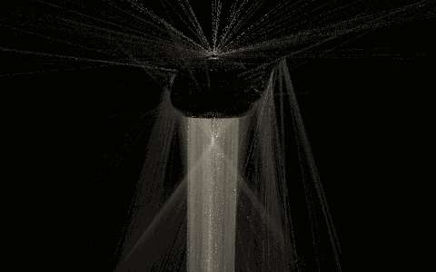
Reference · approximately equal render time
480 × 300 · 22 passes
25.67 ms / measured pass
Mean RGB 0.001263 · peak component 0.217
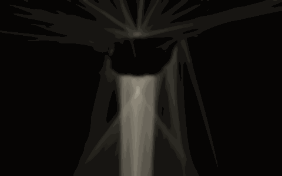
Preview · approximately equal render time
480 × 300 · 32 passes
15.40 ms / measured pass
Mean RGB 0.001428 · peak component 0.04848
Reference: 564.8 ms total measured render time · Preview: 492.9 ms total measured render time
Equal pass count · retained films Equal pass count The same angular sample count per pass. Screen filtering and omitted specular camera paths still change the image.
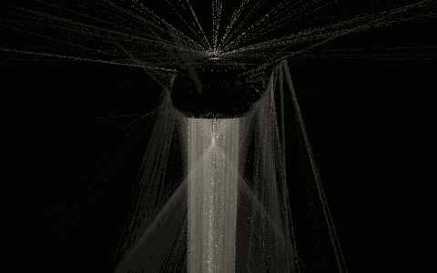
Reference · equal pass count
480 × 300 · 16 passes
22.81 ms / measured pass
Mean RGB 0.001257 · peak component 0.2874
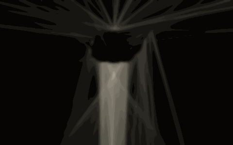
Preview · equal pass count
480 × 300 · 16 passes
15.71 ms / measured pass
Mean RGB 0.001507 · peak component 0.04736
Reference preservation · All checked films byte identical Scene 48 · strategy 20 · byte identical
Checkpoint · preview disabled
480 × 300 · 4 passes
3.75 ms / measured pass
Mean RGB 0.03379 · peak component 10.61
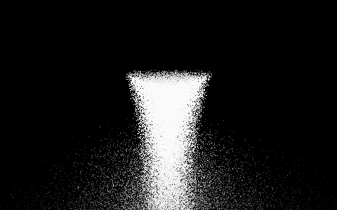
Current build · preview disabled
480 × 300 · 4 passes
4.26 ms / measured pass
Mean RGB 0.03379 · peak component 10.61
Scene 84 · strategy 32 · byte identical
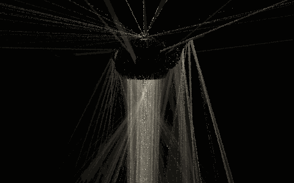
Checkpoint · preview disabled
480 × 300 · 4 passes
24.97 ms / measured pass
Mean RGB 0.001416 · peak component 0.2082
Current build · preview disabled
480 × 300 · 4 passes
25.22 ms / measured pass
Mean RGB 0.001416 · peak component 0.2082
Matched native study · 87
Glass chain fast-preview-final-chain
Finite sheet preview 480 × 300 output 240 × 150 preview raster 96 rays × 8 sheets 12 glass interfaces Refracted fog only Blur σ = 1.0 px
First renderer pass 22.59 → 20.36 ms1.11× reference / preview cost
Steady render pass 15.92 → 14.55 ms1.09× reference / preview cost
First film One native pass on each path. Geometry setup is included in the measured cost.
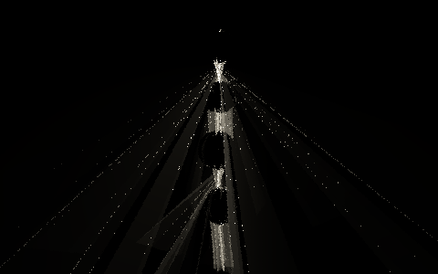
Reference · first film
480 × 300 · 1 passes
22.59 ms / measured pass
Mean RGB 0.0006919 · peak component 3.991
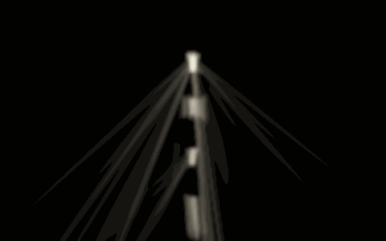
Preview · first film
480 × 300 · 1 passes
20.36 ms / measured pass
Mean RGB 0.000702 · peak component 0.1952
Approximately equal render time Pass counts come from steady timing estimates; the recorded total below includes initialization, so actual times can differ.
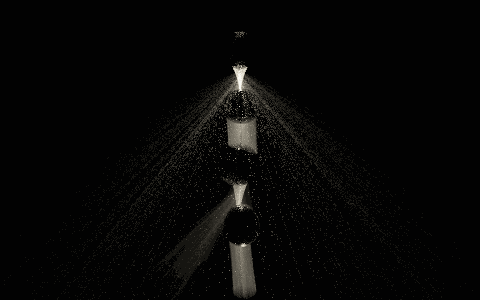
Reference · approximately equal render time
480 × 300 · 31 passes
15.94 ms / measured pass
Mean RGB 0.0006643 · peak component 0.5673
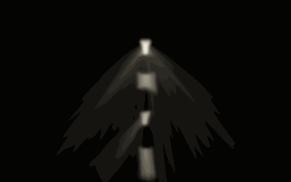
Preview · approximately equal render time
480 × 300 · 34 passes
14.67 ms / measured pass
Mean RGB 0.0007254 · peak component 0.1908
Reference: 494.2 ms total measured render time · Preview: 498.8 ms total measured render time
Equal pass count · retained films Equal pass count The same angular sample count per pass. Screen filtering and omitted specular camera paths still change the image.
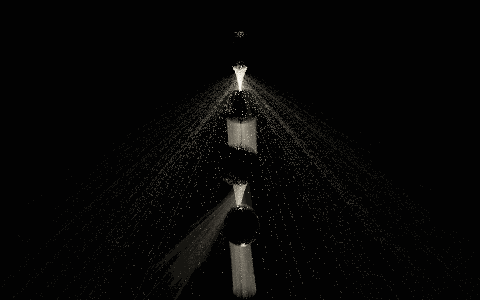
Reference · equal pass count
480 × 300 · 16 passes
15.92 ms / measured pass
Mean RGB 0.000669 · peak component 0.937
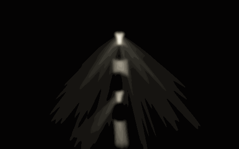
Preview · equal pass count
480 × 300 · 16 passes
14.55 ms / measured pass
Mean RGB 0.0007182 · peak component 0.1875
Matched native study · 85
Glass spheres fast-preview-final-spheres
Finite sheet preview 480 × 300 output 240 × 150 preview raster 96 rays × 8 sheets 12 glass interfaces Refracted fog only Blur σ = 1.0 px
First renderer pass 20.95 → 22.39 ms0.94× reference / preview cost
Steady render pass 16.54 → 17.77 ms0.93× reference / preview cost
At this resolution, the preview costs 7.5% more per steady pass. This result is retained alongside the faster cases.
First film One native pass on each path. Geometry setup is included in the measured cost.
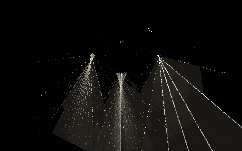
Reference · first film
480 × 300 · 1 passes
20.95 ms / measured pass
Mean RGB 0.001907 · peak component 4.439
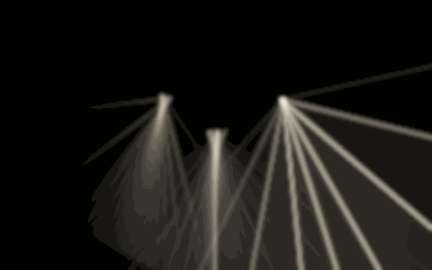
Preview · first film
480 × 300 · 1 passes
22.39 ms / measured pass
Mean RGB 0.002645 · peak component 0.1923
Approximately equal render time Pass counts come from steady timing estimates; the recorded total below includes initialization, so actual times can differ.
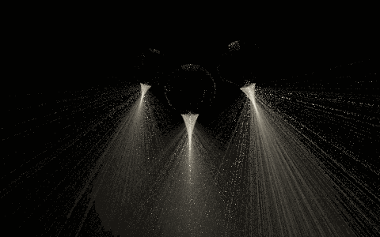
Reference · approximately equal render time
480 × 300 · 30 passes
15.98 ms / measured pass
Mean RGB 0.001468 · peak component 0.9491
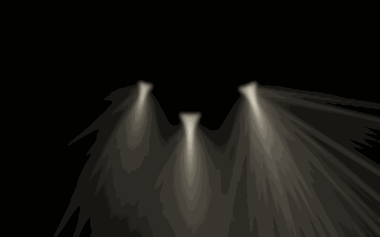
Preview · approximately equal render time
480 × 300 · 28 passes
17.21 ms / measured pass
Mean RGB 0.001834 · peak component 0.09797
Reference: 479.3 ms total measured render time · Preview: 481.9 ms total measured render time
Equal pass count · retained films Equal pass count The same angular sample count per pass. Screen filtering and omitted specular camera paths still change the image.
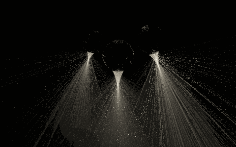
Reference · equal pass count
480 × 300 · 16 passes
16.54 ms / measured pass
Mean RGB 0.001565 · peak component 0.6704
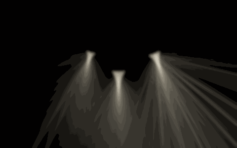
Preview · equal pass count
480 × 300 · 16 passes
17.77 ms / measured pass
Mean RGB 0.001919 · peak component 0.1019
Matched native study · 86
Glass torus fast-preview-final-torus
Finite sheet preview 480 × 300 output 240 × 150 preview raster 96 rays × 8 sheets 12 glass interfaces Refracted fog only Blur σ = 1.0 px
First renderer pass 25.47 → 24.37 ms1.05× reference / preview cost
Steady render pass 27.51 → 23.12 ms1.19× reference / preview cost
First film One native pass on each path. Geometry setup is included in the measured cost.
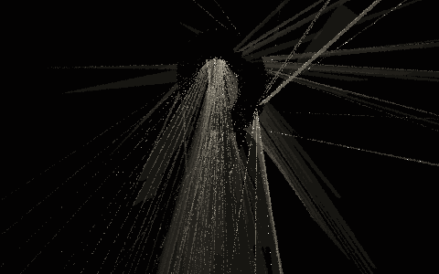
Reference · first film
480 × 300 · 1 passes
25.47 ms / measured pass
Mean RGB 0.001042 · peak component 0.7706
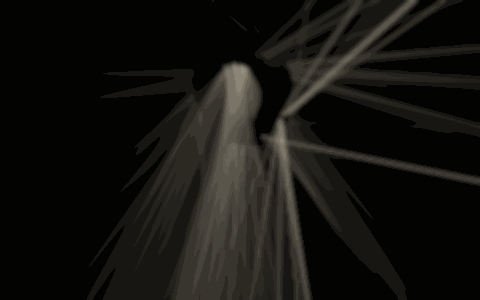
Preview · first film
480 × 300 · 1 passes
24.37 ms / measured pass
Mean RGB 0.001308 · peak component 0.03733
Approximately equal render time Pass counts come from steady timing estimates; the recorded total below includes initialization, so actual times can differ.
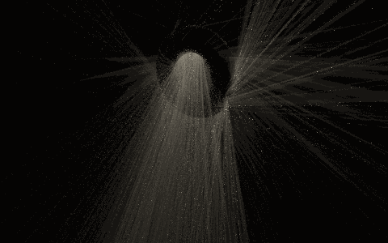
Reference · approximately equal render time
480 × 300 · 18 passes
26.52 ms / measured pass
Mean RGB 0.001084 · peak component 0.1336
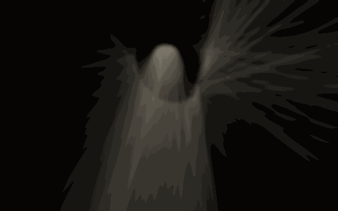
Preview · approximately equal render time
480 × 300 · 22 passes
23.19 ms / measured pass
Mean RGB 0.001315 · peak component 0.02382
Reference: 477.3 ms total measured render time · Preview: 510.3 ms total measured render time
Equal pass count · retained films Equal pass count The same angular sample count per pass. Screen filtering and omitted specular camera paths still change the image.
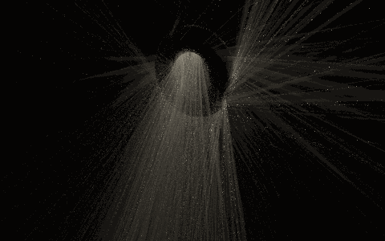
Reference · equal pass count
480 × 300 · 16 passes
27.51 ms / measured pass
Mean RGB 0.001061 · peak component 0.1501
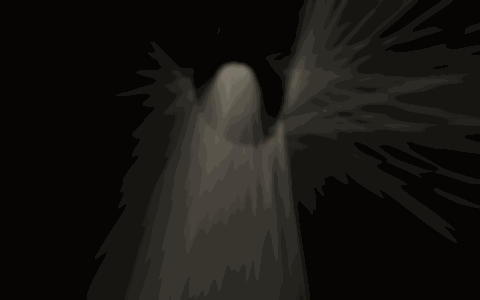
Preview · equal pass count
480 × 300 · 16 passes
23.12 ms / measured pass
Mean RGB 0.001333 · peak component 0.02434
Matched native study · 84
Utah teapot fast-preview-final-teapot-hd
Finite sheet preview 1280 × 800 output 640 × 400 preview raster 96 rays × 8 sheets 12 glass interfaces Refracted fog only Blur σ = 1.0 px
First renderer pass 157.07 → 49.94 ms3.15× reference / preview cost
Steady render pass 138.88 → 46.83 ms2.97× reference / preview cost
First film One native pass on each path. Geometry setup is included in the measured cost.
Reference · first film
1280 × 800 · 1 passes
157.07 ms / measured pass
Mean RGB 0.001178 · peak component 0.581
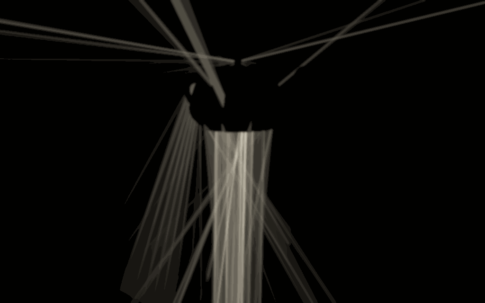
Preview · first film
1280 × 800 · 1 passes
49.94 ms / measured pass
Mean RGB 0.001334 · peak component 0.08204
Approximately equal render time Pass counts come from steady timing estimates; the recorded total below includes initialization, so actual times can differ.
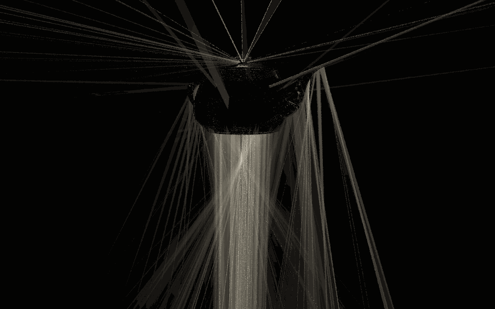
Reference · approximately equal render time
1280 × 800 · 4 passes
149.61 ms / measured pass
Mean RGB 0.001423 · peak component 0.4139
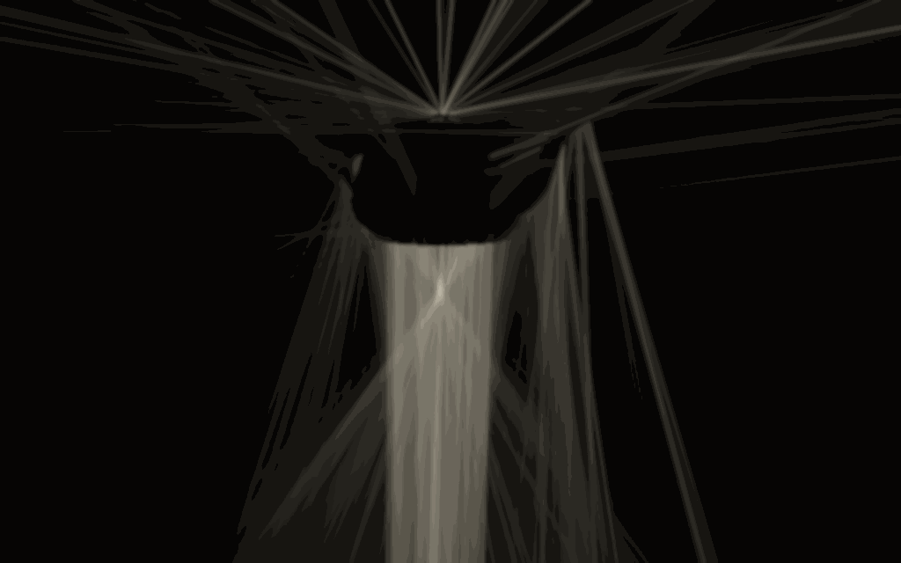
Preview · approximately equal render time
1280 × 800 · 11 passes
46.37 ms / measured pass
Mean RGB 0.001545 · peak component 0.07168
Reference: 598.4 ms total measured render time · Preview: 510.1 ms total measured render time
Equal pass count · retained films Equal pass count The same angular sample count per pass. Screen filtering and omitted specular camera paths still change the image.
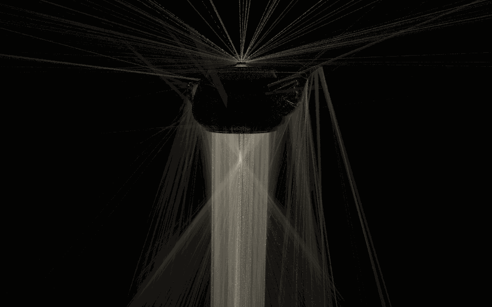
Reference · equal pass count
1280 × 800 · 16 passes
138.88 ms / measured pass
Mean RGB 0.001257 · peak component 0.3621
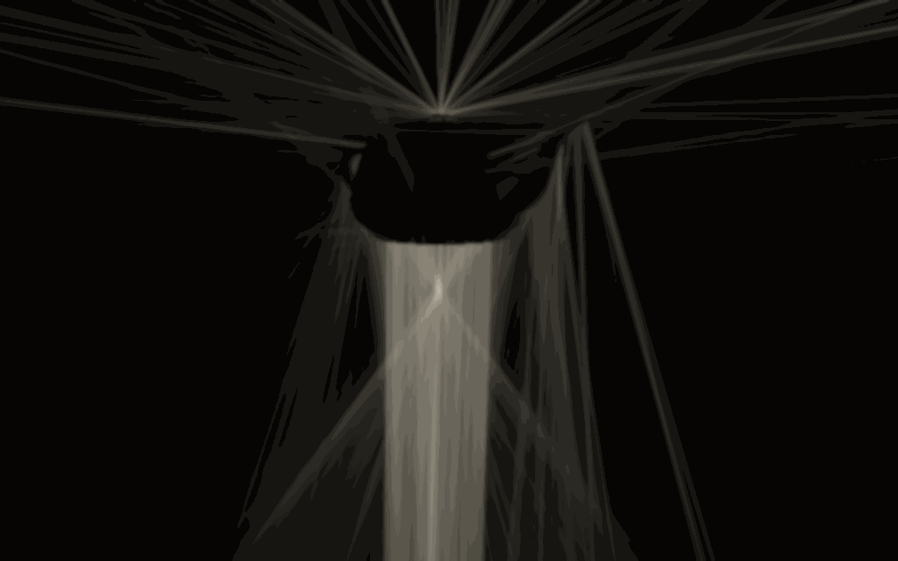
Preview · equal pass count
1280 × 800 · 16 passes
46.83 ms / measured pass
Mean RGB 0.001508 · peak component 0.06897
Matched native study · 87
Glass chain fast-preview-final-chain-hd
Finite sheet preview 1280 × 800 output 640 × 400 preview raster 96 rays × 8 sheets 12 glass interfaces Stage visible Blur σ = 1.0 px
First renderer pass 134.26 → 56.84 ms2.36× reference / preview cost
Steady render pass 126.42 → 58.40 ms2.16× reference / preview cost
Retained intensity outlier · steady film Preview peak 1877; mean RGB 0.0118, versus reference 0.0009665. 16 pixels above 1% of the peak carry 91.3% of the linear RGB sum. The preview film contains a high-intensity outlier and its mean differs substantially. With stage surfaces enabled, rare bright camera-side lamp paths in the stochastic surface companion can cause this pattern; the source is not causally isolated by these records. The native image and values are retained without clipping. This pair is not an accuracy certificate.
First film One native pass on each path. Geometry setup is included in the measured cost.
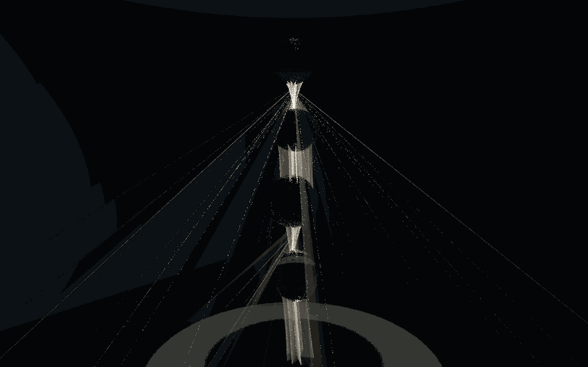
Reference · first film
1280 × 800 · 1 passes
134.26 ms / measured pass
Mean RGB 0.000956 · peak component 4.937
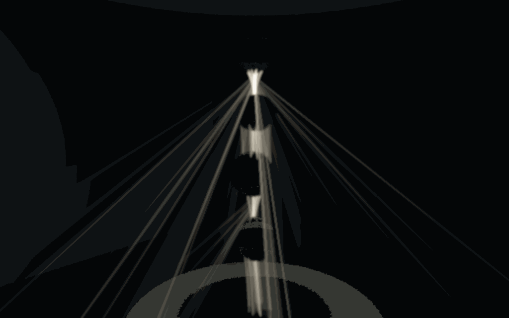
Preview · first film
1280 × 800 · 1 passes
56.84 ms / measured pass
Mean RGB 0.001008 · peak component 0.3866
Approximately equal render time Pass counts come from steady timing estimates; the recorded total below includes initialization, so actual times can differ.
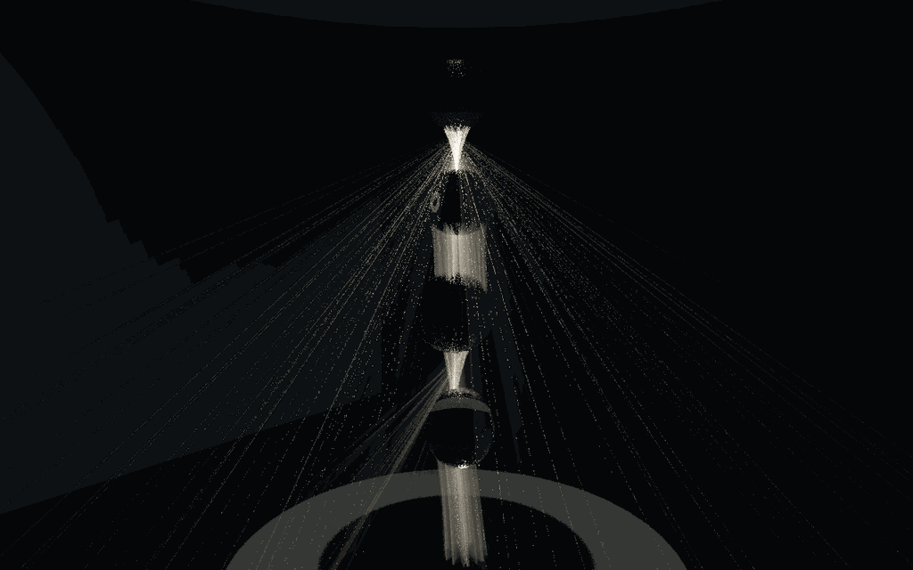
Reference · approximately equal render time
1280 × 800 · 4 passes
139.80 ms / measured pass
Mean RGB 0.001018 · peak component 4.451
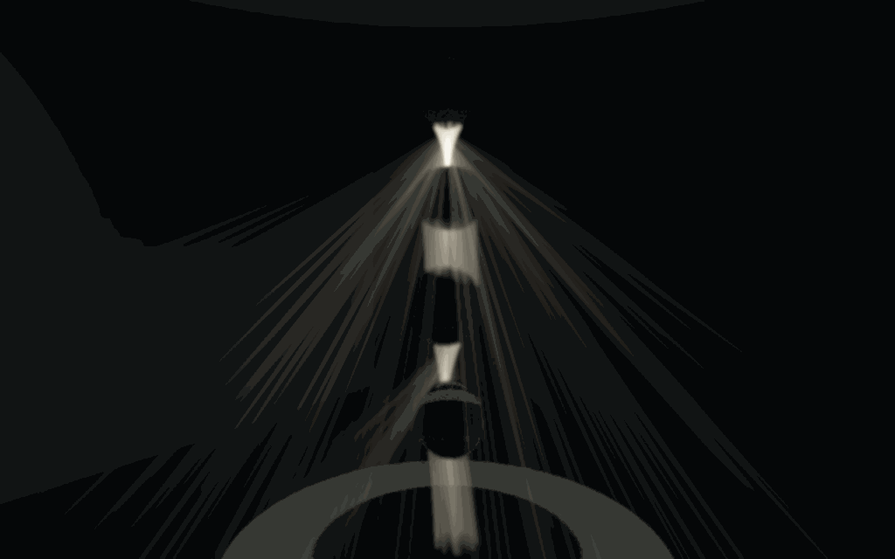
Preview · approximately equal render time
1280 × 800 · 9 passes
57.16 ms / measured pass
Mean RGB 0.001079 · peak component 0.3432
Reference: 559.2 ms total measured render time · Preview: 514.5 ms total measured render time
Equal pass count · retained films Equal pass count The same angular sample count per pass. Screen filtering and omitted specular camera paths still change the image.
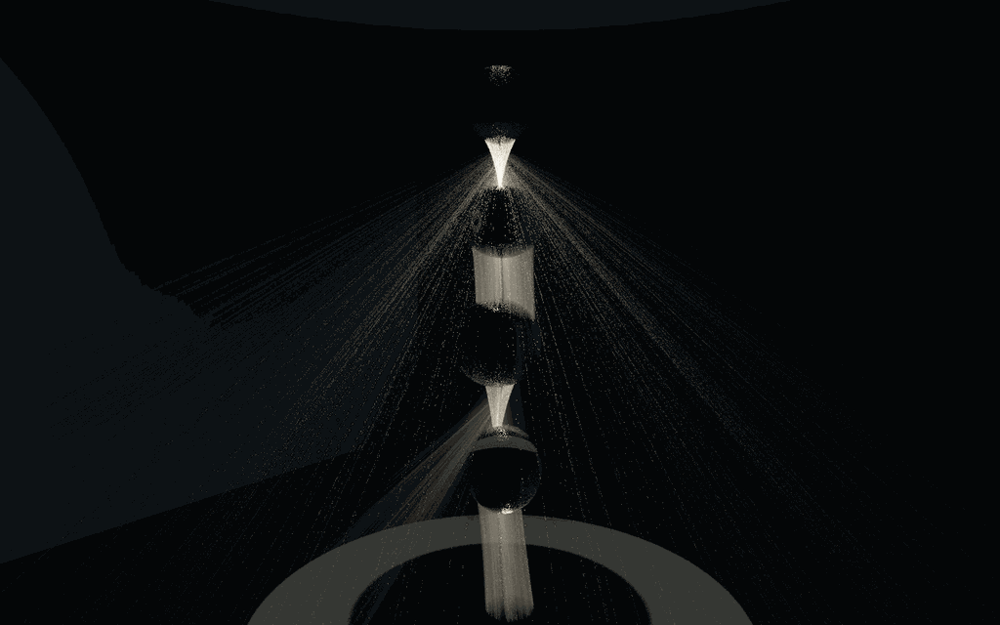
Reference · equal pass count
1280 × 800 · 16 passes
126.42 ms / measured pass
Mean RGB 0.0009665 · peak component 1.229
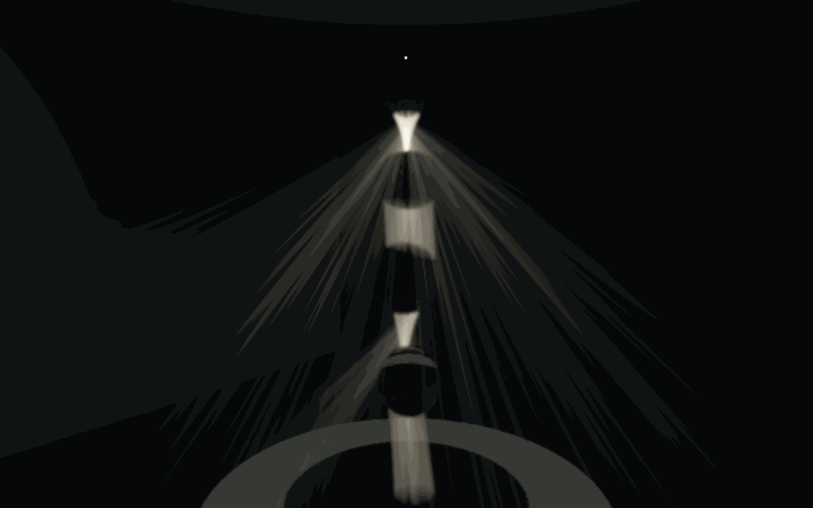
Preview · equal pass count
1280 × 800 · 16 passes
58.40 ms / measured pass
Mean RGB 0.0118 · peak component 1877
{kind=link}
{kind=link}
{kind=link}
{kind=link}